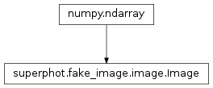

superphot.fake_image.image module¶
Class Inheritance Diagram¶

Defines a base class for fake star images.
-
class
superphot.fake_image.image.Image[source]¶ Bases:
numpy.ndarrayA base class for fake images.
-
static
__new__(x_resolution, y_resolution, background=0.0)[source]¶ Create an image with the given resolution and background.
-
add_source(x, y, amplitude, psf=None, prf=None, subpix_map=array([[1.]]))[source]¶ Adds a source to this image.
Parameters: - x – The x coordinate of the center of the new source relative to the lower left corner of the image.
- y – The x coordinate of the center of the new source relative to the lower left corner of the image.
- amplitude – The amplitude to scale the PSF by.
- psf – The PSF to use for the new source. Should be of some type inherited from fake_image.psf or None if PRF is used instead.
- prf – The pixel response function (PRF) to use for the new source. Should be of some type inherited from fake_image.psf or None if PSF is used instead. The pixel response function is the PSF convolved with the pixel sensitivity map.
- subpix_map – The sub-pixel sensitivity map. Should be a numpy.ndarray of some sort (i.e. provide shape attribute and subscripting).
Returns: None
-
static